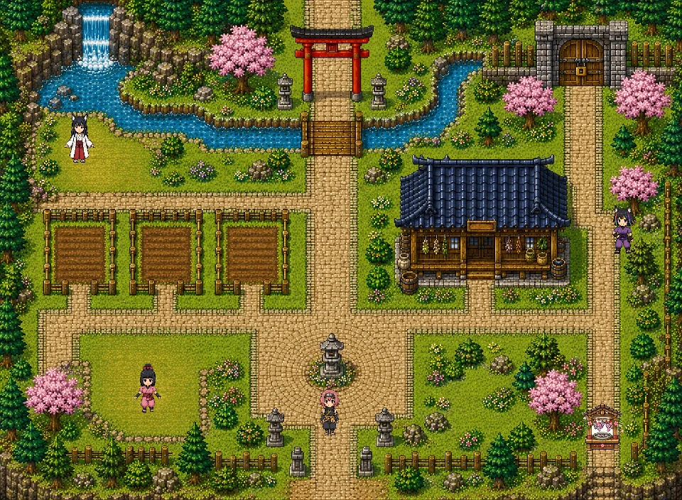
春
甲賀の里
すべてが始まる季節。桜の下で畑を耕し、はじめてのお薬を調合します。眠れない夜、季節の変わり目の不調——最初の依頼はここから。
これは制作初期に作った「イメージPV」です。
実際のゲームとは絵柄・画面・仕様が大きく異なります（PVは3D、本編は2Dのドット絵です）。
雰囲気づくりの参考としてご覧ください。
イメージPV（約2分20秒・音が出ます）／実際の画面は「壱 遊ぶ」でそのまま確かめられます。
▶ 遊び方を3分で見る
遊び方チュートリアル動画をXで見る（@EarthGigantea）
🌸 セーブデータはお使いのブラウザに自動保存されます。同じパソコン・同じブラウザで開けば、いつでも続きから遊べます（ブラウザの履歴・サイトデータを削除すると消えるのでご注意を）。
スマートフォンでご覧の方へ
スマホでは、下のボタンから全画面でそのまま遊べます。
移動は右下の十字キー（行きたい場所をタップでもOK）、調べる・話す・調合は画面左下の
Aボタンです。種や人はタップするだけで、近くまで歩いて採ったり話したりできます。
セーブはお使いのブラウザに自動保存されます（ブラウザの履歴・サイトデータを削除すると消えるのでご注意を）。
舞台は、四季それぞれの忍の里。主人公の酉花（トリカ）は、里をめぐる小さなお薬屋さんです。
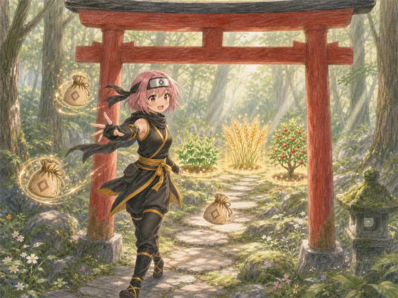
里の鳥居をくぐると「種の聖域」へ。光る採取スポットで、生薬の種を集めます。
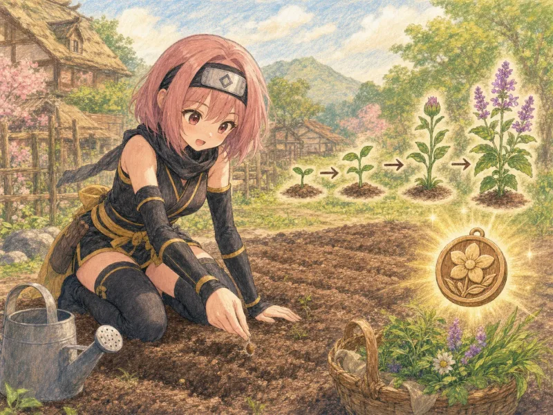
採ってきた種を里の畑へ。じっくり育ったら収穫して、生薬メダルを蓄えます。
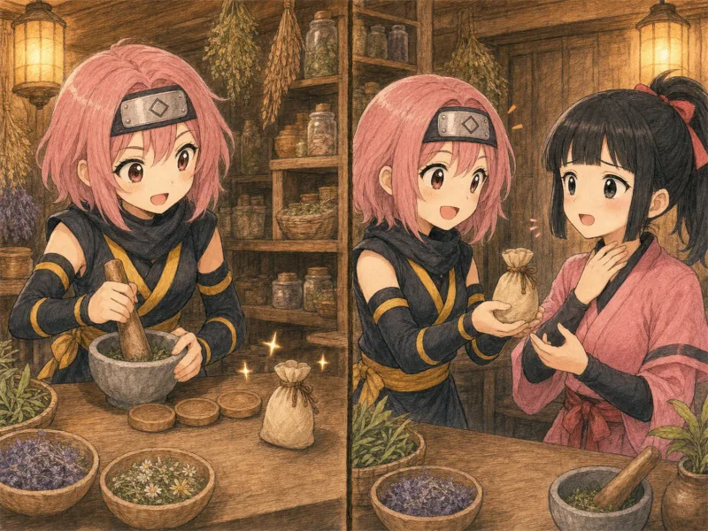
工房の調合台で漢方の処方を組み立て、症状に合うお薬を届けます。里の悩みを解くと、次の季節への門がひらきます。
登場する処方は、実在する漢方薬をもとにしています。遊びながら「どの生薬が、どの処方に入るのか」が手ざわりで残るように作りました。
里は四つ。春から始まり、悩みを解くたびに次の季節への門がひらきます。

すべてが始まる季節。桜の下で畑を耕し、はじめてのお薬を調合します。眠れない夜、季節の変わり目の不調——最初の依頼はここから。
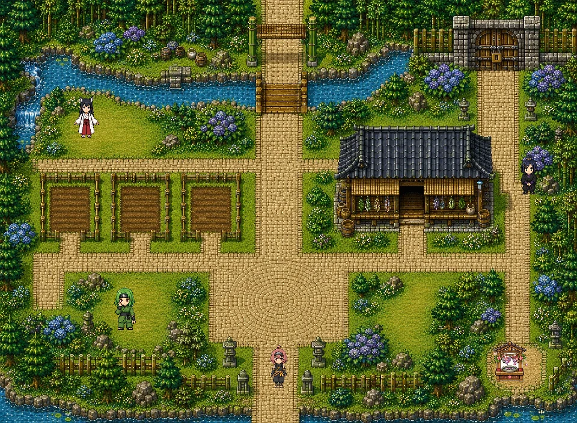
照りつける日差しと、こもる熱。汗をかきすぎて力が出ない体を立て直す処方を届けに、新しい顔ぶれのいる里へ。
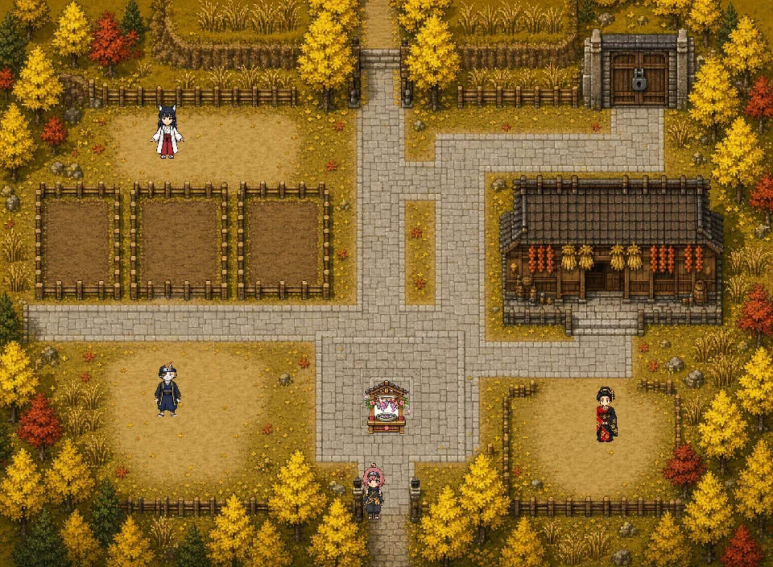
乾いた風が喉をいためる季節。咳とうるおいをめぐる生薬が増え、畑で育てるものも変わっていきます。
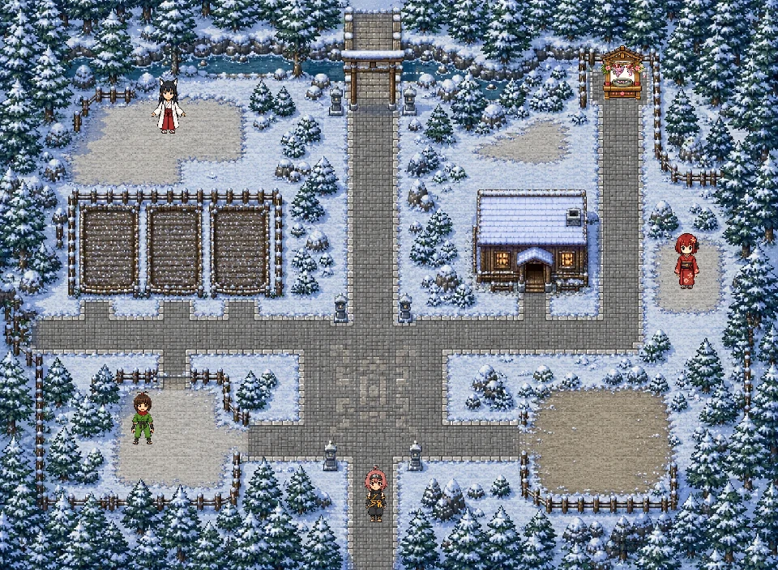
底冷えの里。体の芯からあたためる処方で、最後の依頼まで届けきったとき、酉花の一年がひとめぐりします。
四つの里で出会う14人。話しかけると、それぞれの体の悩みを打ち明けてくれます。
伊賀の忍。得意の忍術は毒手裏剣で、名前は毒草トリカブトに由来──けれど本当は、花を育てることが好きな穏やかな女の子。毒と薬が紙一重なら、私は薬のほうを届けたい。畑を耕し、生薬を集め、処方を調合して、四つの里の「つらい」をひとつずつ癒やしてまわります。誕生日は8月9日、薬草の日。
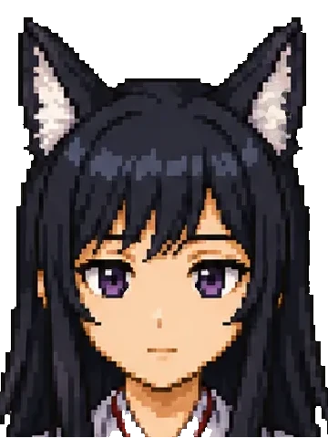
甲賀の忍で、宇迦の姉。管狐を操る秘術「飯綱の法」の使い手です。このゲームでは季節のどの里にも属さない案内役として、酉花の旅にそっと付き添います。困ったときに道をひらいてくれるのも、最後の報告を受け取ってくれるのも、この人。白と黒の小窓が出たら、それはイズナの声です。
口寄せの術を操る、岩爺の孫。名は繁栄の女神コノハナサクヤヒメから。春の里で最初の依頼をくれる、収穫の知恵袋。
口寄せでパンダの「リーリー」を呼び出す甲賀の忍。工房では調合の手ほどき役。頼れる里のお医者さん気質。
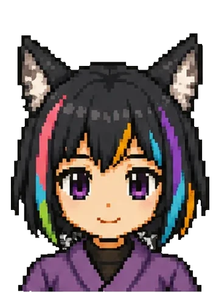
ネム絵筆の忍術「動植綵絵」を使う自由人。ユニコーンのパートナー「エマ」を連れて、遊び方をやさしく教えてくれます。
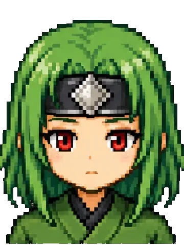
蛇ノ目（ジャノメ）白蛇の「オロチ」を口寄せする風魔の忍。どこか抜けていて、しばしばオロチに助けられている愛され者。
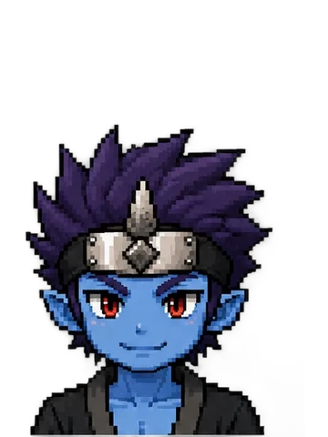
アウン自らの体を巨大化させる怪力の忍で、アトザの弟。見た目は強面、夏バテには弱い。工房番もつとめます。
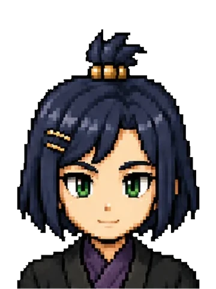
イブキ呪符を操る風魔の術者。相棒「ヤーマ」は本人の力量に合わせて姿が変わる決まりで、いまは愛らしい姿。
ふだんは犬の姿、いざとなれば忍術で人型に変化する水遁の使い手。薬を届けた人にだけ、本当の姿を見せてくれるかも。
影分身と妖刀村正を操る猫の忍。魚介類に目がない食いしん坊で、乾いた秋は喉の調子が気になるお年頃。
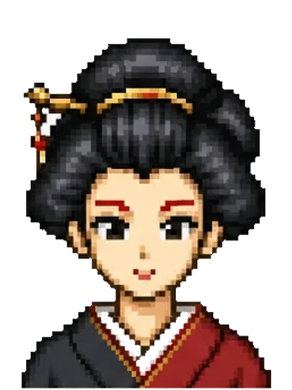
弁天（べんてん）三味線と祝詞をたしなむ姐さん。頭領の孫市から里の管理を任されている、雑賀のまとめ役です。
団子の串を武器に影縫いの術を放つ、陽気なお調子者。寒い里に、あたたかい笑い声を響かせます。
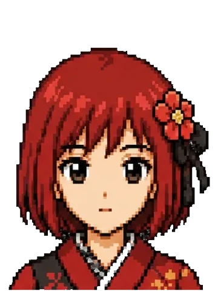
結（ゆい）桜吹雪の術で後方支援に徹する、岩爺の孫。前には出ないけれど、里のみんなをそっと支えるタイプ。
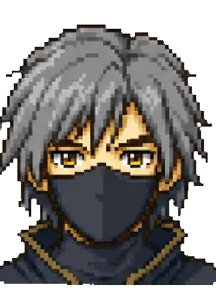
ハヤテ鷹の「ナルカミ」を相棒にする、伊賀の師匠格。鷹の目で里を見渡しながら、冬の工房を守っています。
その人の依頼をすべて叶えると、ゲーム内のギャラリーに一枚絵がひらきます。何が出るかは、届けきった人だけのお楽しみに。
この里に出てくる忍たちは、わたしのオリジナルキャラクターではありません。 NinjaDAOのクリプトニンジャたちに、登場してもらっています。
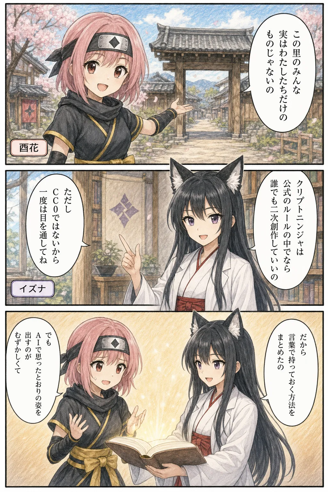
クリプトニンジャのキャラクターは、 公式の利用ガイドライン の範囲内であれば、二次創作はもちろん商用利用まで認められています（年商2,000万円以内。超える場合は許可制）。 このゲームも、そのおかげで作れました。
⚠️ ただし、いわゆる「CC0」＝著作権の放棄ではありません。 また CryptoNinja本体と CryptoNinja Partners（CNP）は別のガイドラインで、 CNPのキャラクターで作ったものは販売・商品化ができません。 ふたつを一括りにしないよう、使う前に一度だけ原文に目を通してください。
このゲームのキャラクターは、ドット絵も顔グラも、すべてAIで生成しています。 けれど実際にやってみると、いちばん手こずったのは「使っていいかどうか」ではなく、 思ったとおりの姿を出すことでした。
髪の色も、袖の長さも、指示を書き落とすたびに別人になります。 そこで、キャラクターの外見を言葉として持っておくやり方に切り替えました。 その手順と、43体分の言葉をまとめたのが下の教材です。
クリプトニンジャAI創作スターターキット Brain教材 ／ キャラクターを「言葉で持っておく」ための入口 ↗